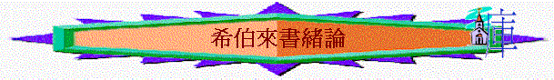

1.書名
〜「希伯來」：「渡過」之意思，指亞伯拉罕離開吾珥，後來渡過河到迦南，人稱呼他為渡過河之人，他們的子孫也稱為希伯來人(創14:13)，也是今日我們所講的以色列人。
2.作者
〜本書沒有著名作者是誰，但很多人都覺得是保羅所寫，因為書中題及得多律法的事情，有誰比保羅更明白律法背後的真理，另外來13:23-24題及作者與提摩太有關，他應到過義大利，所以作者極有可能是保羅，但書中沒明確表示，這也不算最重要，最重要的是神啟示作者將真理講明，無論作者是誰，也不影響啟示下來的書信之地位。
3.對象
「論到麥基洗德，我們有好些話，並且難以解明，因為你們聽不進去。看你們學習的工夫，本該作師傅，誰知還得有人將神聖言小學的開端另教導你們，並且成了那必須吃奶，不能吃乾糧的人。」來5:11-12
「親愛的弟兄們，我們雖是這樣說，卻深信你們的行為強過這些，而且近乎得救。」來6:9
「你們要追念往日，蒙了光照以後所忍受大爭戰的各樣苦難：一面被毀謗，遭患難，成了戲景，叫眾人觀看；一面陪伴那些受這樣苦難的人。因為你們體恤了那些被捆鎖的人，並且你們的家業被人搶去，也甘心忍受，知道自己有更美長存的家業。」來10:32-34
〜從經文內容所看，我們看到他們應是信徒，對舊約律法熟悉(應是希伯來人，書名也顯示)，信主年日不是短的，本可作師傅，而且曾為主受難處、受逼害的。
4.日期
〜應不是耶路撒冷被毀(公元後70年，羅馬提多將軍曾攻打耶路撒冷)，因書中提及獻祭的事，而書中也提及提摩太，及信徒已受某程的逼迫，逼迫已開始一時間，所以可能主後63-68年。
5.背景
〜當時希伯來書信徒面對甚麼問題？
A.異教勾引
「你們不要被那諸般怪異的教訓勾引了去；因為人心靠恩得堅固才是好的，並不是靠飲食。那在飲食上專心的從來沒有得著益處。」來13:9
「所以，不拘在飲食上，或節期、月朔、安息日都不可讓人論斷你們。這些原是後事的影兒；那形體卻是基督。不可讓人因著故意謙虛和敬拜天使，就奪去你們的獎賞。這等人拘泥在所見過的（有古卷：這等人窺察所沒有見過的），隨著自己的慾心，無故的自高自大。」西2:16-18
〜當時信徒可能被猶太教引誘，叫他們返回律法主義，要死守規條，敬拜天使，嚴守飲食，這才能使他們更敬虔。
B.苦難逼迫
「你們要追念往日，蒙了光照以後所忍受大爭戰的各樣苦難：一面被毀謗，遭患難，成了戲景，叫眾人觀看；一面陪伴那些受這樣苦難的人。因為你們體恤了那些被捆鎖的人，並且你們的家業被人搶去，也甘心忍受，知道自己有更美長存的家業。」來10:32-34
「那忍受罪人這樣頂撞的，你們要思想，免得疲倦灰心。你們與罪惡相爭，還沒有抵擋到流血的地步。」12:3-4
〜熱心猶太教的人，他們是罪人，已開始逼迫基督徒，要他們放棄信仰，甚致奪去他們的家業，身體也受到捆鎖。
C.靈性軟弱
a.追求膚淺
「看你們學習的工夫，本該作師傅，誰知還得有人將神聖言小學的開端另教導你們，並且成了那必須吃奶，不能吃乾糧的人。」5:12
b.有人倒退
「你們不可停止聚會，好像那些停止慣了的人，倒要彼此勸勉，既知道（原文作看見）那日子臨近，就更當如此。」10:25
「只是義人（有古卷：我的義人）必因信得生。他若退後，我心裡就不喜歡他。」10:38
〜有人似乎忍受不了逼迫，或受異教吸引，已停止聚會，返回以前不信的光景。
c.有人灰心
「那忍受罪人這樣頂撞的，你們要思想，免得疲倦灰心。」12:3
「所以，你們要把下垂的手、發酸的腿、挺起來。」12:12
〜他們走這條天路，遇著很多攻擊時，或許也感到灰心及疲乏。
6.重點
A.「更美」
「他所承受的名，既比天使的名更尊貴，就遠超過天使。」1:4
「他比摩西算是更配多得榮耀，好像建造房屋的比房屋更尊榮。」3:3
「（律法原來一無所成）就引進了更美的指望；靠這指望，我們便可以進到神面前。」7:19
「如今耶穌所得的職任是更美的，正如他作更美之約的中保；這約原是憑更美之應許立的。」8:6
「因為你們體恤了那些被捆鎖的人，並且你們的家業被人搶去，也甘心忍受，知道自己有更美長存的家業。」10:34
「並新約的中保耶穌，以及所灑的血；這血所說的比亞伯的血所說的更美。」12:24
〜本書題及「更美」或「更」比較的字眼超過十多次，目的是藉基督，新約的更美，吸引信徒繼續持守信仰，不要羨慕猶太教，律法主義，其實信徒所相信的才是更美，不要再受異教勾引。
〜而信仰更美之處是甚麼？
a.更美之約的中保
b.更能除罪的方法
c.更美之祭物
d.更美的家業
e.更美的家鄉
B.「信心」
「我們若將起初確實的信心堅持到底，就在基督裡有分了。」3:14
「所以，我們務必竭力進入那安息，免得有人學那不信從的樣子跌倒了。」4:11
「並且不懈怠，總要效法那些憑信心和忍耐承受應許的人。」6:12
「並我們心中天良的虧欠已經灑去，身體用清水洗淨了，就當存著誠心和充足的信心來到神面前；也要堅守我們所承認的指望，不至搖動，因為那應許我們的是信實的。」10:22-23
「只是義人（有古卷：我的義人）必因信得生。他若退後，我心裡就不喜歡他。」10:38
「信就是所望之事的實底，是未見之事的確據。」11:1
「仰望為我們信心創始成終的耶穌（或作：仰望那將真道創始成終的耶穌）。他因那擺在前面的喜樂，就輕看羞辱，忍受了十字架的苦難，便坐在神寶座的右邊。」12:2
「從前引導你們、傳神之道給你們的人，你們要想念他們，效法他們的信心，留心看他們為人的結局。」13:7
〜本書出現超過40多次關乎「信」「不信」「信心」等字眼，因為如要激勵他們在異端引誘及逼迫中，仍不灰心，仍持守信仰，仍忍耐到底，就要他們學習信心的功課，人有了信心後，就會有以下表現：
a.可以看到未見之事的實底
b.可以不至動搖
c.可以坦然來到神面前
d.可以得神喜悅
e.可以得稱為義
f.可以歡喜走前面的路
g.可以更有瞻量
h.可以不灰心
7.主題
〜因著上面所說的背景與重點，我們可以給本書的主題：「超越的信仰」，基督教的信仰比起其它宗教所說的更完全、更美、更超越，信徒不需響往這些異道，反而要欣賞及堅守自己確信的，而信仰之超越、更美之處就在於我們所相信的基督。
〜而信仰本身有“faith”“belief”意思，信仰本身就是信，因有信心時，就能超越重重困難，繼續有力走前面的路程。
8.大綱
超越的信仰
A.認識基督之超越(1-10:18)
a.更美的使者(1-2)
b.更美的首領(3-4:13)
c.更美的祭司(4:14-10:18)
B.活出信心的表現(10:19-13:25)
a.信心的表現(10:19-39)
b.信心的見証(11)
c.信心的路程(12)
d.信心的生活(13)
9.價值
A.更明白約聖禮、會幕、獻祭、律法的屬靈意義
「律法既是將來美事的影兒，不是本物的真像，總不能藉著每年常獻一樣的祭物叫那近前來的人得以完全。」10:1
B.更明白「信」之真理、定義
「信就是所望之事的實底，是未見之事的確據。」11:1
C.更能掌握舊約歷史的意義
「以色列人因著信，圍繞耶利哥城七日，城牆就倒塌了。妓女喇合因著信，曾和和平平的接待探子，就不與那些不順從的人一同滅亡。我又何必再說呢？若要一一細說，基甸、巴拉、參孫、耶弗他、大衛、撒母耳，和眾先知的事，時候就不夠了。」11:30-32
D.更全面認識基督
「又說：主啊，你起初立了地的根基；天也是你手所造的。天地都要滅沒，你卻要長存。天地都要像衣服漸漸舊了；」1:10-11
E.更認識將來更美之家鄉
「所見的極其可怕，甚至摩西說：『我甚是恐懼戰兢。』你們乃是來到錫安山，永生神的城邑，就是天上的耶路撒冷。那裡有千萬的天使，有名錄在天上諸長子之會所共聚的總會，有審判眾人的神和被成全之義人的靈魂。」12:21-23